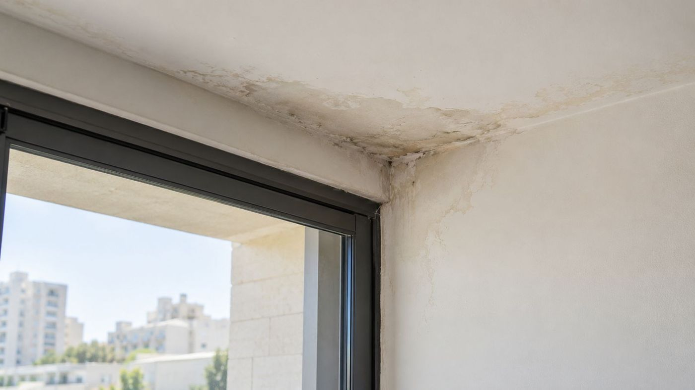
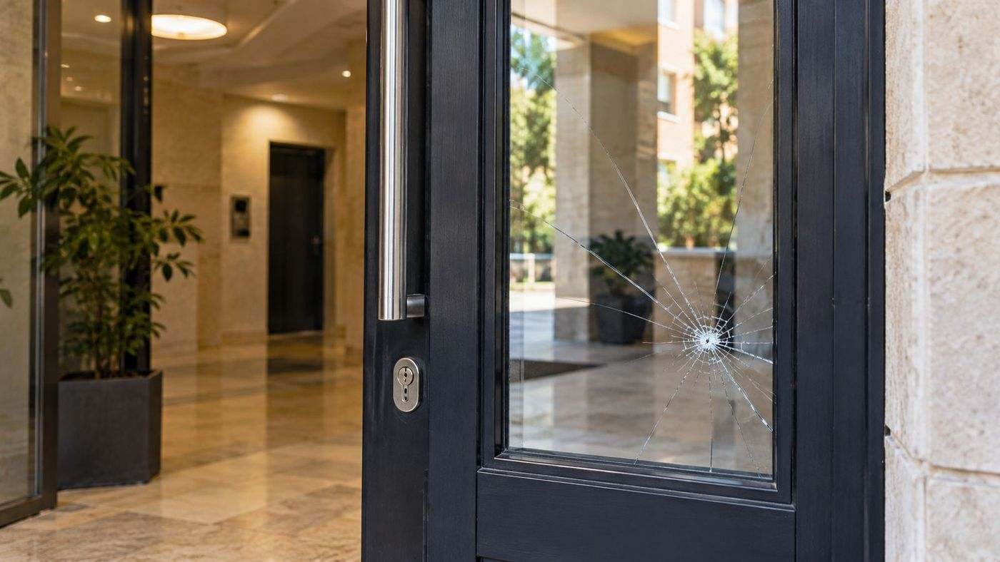

Articles and case law
Recent Israeli court decisions, explained in plain language, with what to know before you find yourself in a similar situation.

They said their lawyer signed a settlement without their consent, but the eviction was not stopped
Members of a family claimed that their former lawyer had signed, in their name and without their knowledge, a settlement requiring them to vacate land in Jerusalem, and asked to stop the eviction and demolition until their claim to cancel the judgment was decided. The Supreme Court refused because of delay, misleading information and a balance of convenience that did not favour them, but the claim itself continues in the District Court.
Read the article
Long-time licensees on state land: Supreme Court refuses leave to appeal eviction
The Israel Land Authority sued to evict a group of residents who have held state land in Bik'at HaKana'im, near Arad, for many years, and both the Magistrates' Court and the District Court granted the suit. The Supreme Court denied the applications for leave to appeal, relying on the recent Alhuashla ruling.
Read the articleBuilt without a permit and kept building after a stop-work order: Supreme Court dismisses appeal against demolition
A man who put up a building without a permit asked the court to grant him a retroactive building permit and cancel the demolition order issued against the building. The Supreme Court dismissed his appeal, held there was no ground to interfere with the planning authorities' decisions, and ordered him to pay ILS 5,000 in costs.
Read the article
An HVAC technician is not a cleaning worker: the limits of the cleaning-sector extension order
A refrigeration and air-conditioning technician who worked 16 years at Dead Sea hotels sued for about ILS 337,000, mostly under the cleaning-sector extension order. The court held the order did not apply and awarded only pension shortfalls and compensation for a missing written notice of employment terms.
Read the article
Travel insurance: valuables stolen from a locked rental car in a car park are not covered
A family whose rental car was broken into in Italy sued their insurer for ILS 32,988 for stolen computers, jewellery, a camera and other valuables. The court held that a locked car in a public car park with CCTV is not a "secure place" under the policy, dismissed the claim for the valuables, and awarded one claimant only ILS 845.
Read the article
Refund claim struck out: the customer sued the wrong company
A customer sued a mobile phone company over credits of ILS 342 she had been promised but never received, and also asked for compensation for distress and for the delay. The court struck out the claim for lack of standing against the company she sued, but left her free to bring a new claim against the right party.
Read the article
Ski bag arrives a day late: how much compensation?
A couple on a ski trip spent a day without their gear, bought replacements and sued for ILS 5,550. The court held the airline liable for the delay even though the fault lay with the airport's baggage system, but awarded only ILS 800.
Read the article
Cancelling an online course more than a year later: when the cancellation terms decide
A buyer of a ILS 4,200 online course asked for a full refund about a year and five months after buying it, citing her health. The claim was dismissed: the cancellation window had closed, and the medical records did not show she was unable to cancel in time.
Read the article
Flood from a building pipe: tenant and landlords sued each other, and both claims were dismissed
A tenant sued her landlords over damp after a flood from the building's pipes, worsening conditions in the complex and a broken dishwasher, and the landlords filed a counterclaim against her. The court dismissed both claims, but ordered the landlords to return a ILS 7,000 security deposit to the tenant.
Read the article
Long-term care insurance: benefits start when the condition was documented, not when the insurer got a report
An insurer eventually approved an insured woman's long-term care claim, but set the start of her entitlement at the date of a urology exam it had itself requested, about eight months after the claim was filed. The small claims court held that her care-dependent condition was proven from April 2025 and ordered the insurer to pay a further ILS 22,400 plus costs.
Read the article
Three-party construction contract: a main contractor cannot withhold one supplier's payment because of another
A main contractor signed a "three-party order" with a cladding installer and a panel supplier, then withheld payment from both. The court held that each was liable only for its own part, and that the handwritten changes they added bound the contractor.
Read the article
Headlight and mirror service plan: what happens when the part costs more than the cap
A driver paid monthly for a headlight and mirror replacement plan and was asked to pay ILS 804 for a new headlight. She called the charge excessive. The court found it matched the coverage document she had attached herself.
Read the article
Rome flight cancelled after the missile strike on Ben Gurion Airport: airline exempt from compensation
A couple whose flight to Rome was cancelled in May 2025 got their money back, yet still sued a low-cost airline for ILS 16,720 in statutory compensation and punitive damages. The court held that the cancellation was caused by special circumstances beyond the airline's control, dismissed the claim and ordered the couple to pay costs.
Read the articleAn owner with a permit to build on the roof need not give up his share of the yard
The owners of a ground-floor flat in a Bat Yam condominium demanded that their upstairs neighbour, who had a permit to extend his flat onto the roof, give up his share of the yard in return, and the Land Registration Supervisor made the construction conditional on that. The District Court cancelled the condition, held that the owner may build under his permit, and kept the yard and roof as common property that no one may take over.
Read the article
Wage advances and a call recording as evidence: an employee sued for back pay and ended up owing money
A metalworker employed for about three months sued for unpaid wages, and the employer counterclaimed for advances paid but never deducted. The employee's claim was dismissed and he was ordered to repay ILS 6,845 and pay costs. The court also explained when a call recording counts for nothing.
Read the article
Defects in common property: a developer that repaired poorly for years lost its right to repair
The representative committee of an apartment building in Haifa sued the developer over construction defects in the common property, and the developer asked to repair them itself. The court held that the developer had exhausted its right to repair and ordered it to pay the committee ILS 254,030, based on the court-appointed expert's estimate.
Read the article
Tenant who knew about TAMA 38 could cancel once workers moved into the rooms
A tenant knew the building was undergoing TAMA 38 works, but days after he got the keys, workers entered two rooms of the flat, while damp, mould and other defects came to light. The court held that cancelling the lease was justified and ordered the landlords to refund March's rent and compensate him, ILS 5,980 in total.
Read the article
Leak from the upstairs neighbour: the flat stood empty, and the neighbour and his insurer must pay the lost rent
An owner whose flat was damaged by moisture seeping from the flat above, and which has stood empty since March 2023, sued the neighbour and his liability insurer for about ILS 423,000, mostly for lost rent. The court partly allowed the claim: it awarded rent from the time the flat was vacated until the date of the decision plus repair costs, and rejected the claims for municipal tax, income tax, a replacement wardrobe and a repair order.
Read the article
Mosaic falling off an old building: claim against the developers dismissed as time-barred
The house committee of an apartment building in Nahariya and one resident sued the developers over mosaic tiles falling from the outer walls, alleging a hidden structural defect. The court dismissed the claim, mainly on limitation grounds, and ordered the plaintiffs to pay ILS 80,000 in costs.
Read the article
Tenant sued neighbours over a leak without an expert or the landlord: claim struck out
A tenant sued two neighbours for ILS 39,900, claiming a leak from their flats kept him from reasonable use of the apartment, and sought mainly a refund of rent. The court struck out the claim because no expert opinion was attached, the landlord was not joined and the tenant did not disclose that the owner had already been compensated.
Read the article
Landlord cashed a security cheque without notice and must return ILS 11,151 to the tenant
After a seven-year tenancy, the landlord cashed a ILS 30,000 security cheque without prior notice and kept ILS 11,151 for alleged damage to the apartment. The court held that he had not proved the damage, ordered him to return the money and dismissed his defamation claim against the tenant.
Read the article
Common-property defects seven years after handover: claim not time-barred, developer held liable
The representative committee of a residential building in Netanya sued the developer that built it over waterproofing, plumbing and paving-subsidence defects in the common property, and the developer argued limitation and the expiry of the inspection and warranty periods. The court rejected those threshold defences, held that the developer had lost its right to carry out repairs and awarded partial compensation, while refusing reimbursement for waterproofing work the committee had commissioned on its own.
Read the article
33-month delay in handing over apartments: COVID and authority delays do not excuse the developer
The buyer of two new apartments sued the developer over a 33-month handover delay and loss of value, and the developer counterclaimed for the balance of the price. The court rejected all of the developer's excuses and awarded the buyer ILS 321,823, but ordered her to pay ILS 316,521 as the balance of the price, so that in the end she received only ILS 5,302.
Read the article
Supreme Court: a buyer who did not let the developer repair defects gets less, not nothing
Two apartment buyers sued the company that built their building over construction defects before the warranty period ended, without giving it a real chance to make repairs. The District Court denied them any compensation for the defects, but the Supreme Court reversed, holding that the rule is to reduce compensation to the contractor's own repair cost, not to deny it.
Read the article
Late apartment handover: buyers can use small claims, and a war defense must be proven
A couple received their apartment in Ashkelon six months late and sued for compensation in small claims court, while the developer argued that the war was force majeure and the case too complex for that court. The district court refused the developer leave to appeal and left an award of ILS 35,100 in place.
Read the article
A seller who was late with Form 4 cannot cancel the sale at once over a short payment delay
House buyers paid the balance late, after the seller himself had taken about three months longer than agreed to obtain Form 4, and the seller cancelled the contract just three days after the deadline. The Supreme Court held that the delay was indeed a fundamental breach, but good faith required the seller to grant an extension first, so the cancellation is invalid and the contract will be performed.
Read the article